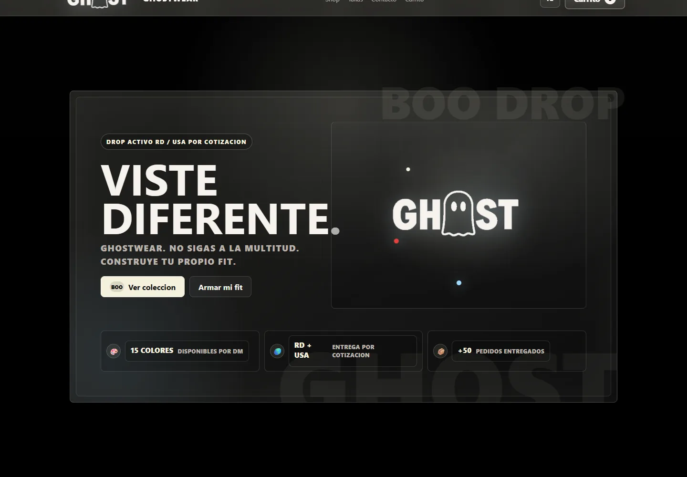

GhostWear
Catálogo, carrito y pedidos conectados a WhatsApp para convertir visitas en conversaciones de venta.
- Objetivo
- Facilitar catálogo y pedidos desde móvil
- Entrega
- Catálogo, carrito y pedido por WhatsApp
YC Systems LLC · Software operativo para empresas en crecimiento
Centralizamos datos, automatizamos tareas y conectamos herramientas en una primera fase con alcance, plazo y criterios de aceptación definidos antes de desarrollar.
Respuesta inicial en 24–48 horas laborales · no necesitas requisitos técnicos
Trabajo publicado
Explora proyectos públicos y autorizados: cada uno parte de un objetivo comercial distinto y termina en una experiencia que se puede recorrer.

Catálogo, carrito y pedidos conectados a WhatsApp para convertir visitas en conversaciones de venta.
Casos públicos y autorizados. Mostramos el alcance y la evidencia disponible sin atribuir resultados que no podamos comprobar.
Señales operativas
Estas señales suelen aparecer juntas. Identificarlas permite decidir qué necesita orden antes de construir.
Los datos están en demasiados lugares y no hay una vista completa.
Tareas repetitivas que consumen tiempo y generan errores.
Falta visibilidad para decidir con rapidez y seguridad.
Sistemas que no comparten datos ni procesos.
Lo que construimos
Cada solución resuelve una fricción concreta y se integra gradualmente con el resto de la operación.
Plataformas internas que concentran operaciones, usuarios, tareas y decisiones.
Explorar soluciónFlujos que reducen seguimiento manual y hacen visible cada estado.
Explorar soluciónHerramientas conectadas mediante una base de información confiable.
Explorar soluciónExperiencias adaptadas a clientes, equipos, proveedores y socios.
Explorar soluciónDiagnóstico rápido · 1 minuto
Elige la fricción que más se parece a tu operación. YC Systems te mostrará una primera fase posible y te llevará a una conversación más útil.
¿Qué necesitas destrabar primero?
No necesitas tener el diagnóstico completo para comenzar.
YC Systems reúne procesos, responsables y estados para que el equipo pueda decidir con el mismo contexto.
La recomendación es un punto de partida; la definimos contigo antes de construir.
El objetivo no es añadir otra herramienta: es hacer visible qué debe cambiar primero.
Método YC Systems
Cada fase toma una decisión, produce un entregable y reduce un riesgo antes de avanzar.
Formas de empezar
Cada ruta aclara para quién es, qué ayuda a decidir y qué contexto necesitamos antes de proponer una construcción.
Para empresas que reconocen una fricción, pero aún deben confirmar si el siguiente paso es software, automatización o una mejor experiencia web.
Para centralizar información, automatizar tareas, conectar herramientas o hacer visible un proceso crítico sin reemplazar toda la operación.
Para convertir una oferta en una experiencia clara, verificable y preparada para llevar al visitante hacia una consulta, pedido o decisión.
Después de enviar
Una solicitud no te obliga a construir. Sirve para entender el contexto, reducir incertidumbre y decidir si existe una primera fase razonable.
Dos pasos breves para explicar qué está frenando la operación. No necesitas llegar con una solución decidida.
Respondemos habitualmente en 24–48 horas laborales con el siguiente paso recomendado.
Si el proyecto avanza, la propuesta define alcance, fases, tiempos, pagos y responsabilidades antes de construir.
Mostramos trabajo público y distinguimos claramente lo comprobado de lo que todavía debe validarse.
Definimos qué entra, qué queda fuera y qué cambio debería hacerse visible.
La propuesta indica qué soporte, acompañamiento o evolución queda incluido después del lanzamiento.
Antes de decidir
Sin requisitos técnicos, precios inventados ni compromisos ocultos: primero aclaramos el contexto y después definimos el alcance.
No. Puedes comenzar describiendo el proceso, la fricción y el cambio que necesitas observar. YC Systems organiza las preguntas técnicas después.
La inversión se presenta después de entender el alcance. Si existe encaje, la propuesta separa fases, entregables, tiempos, pagos y responsabilidades antes de desarrollar.
Una definición compartida del problema y, cuando corresponde, una propuesta de primera fase con límites, entregables y criterios de aceptación.
No necesariamente. Primero evaluamos qué conviene conservar, conectar, simplificar o sustituir para evitar cambios más grandes de lo necesario.
Sí. Diseñamos sitios corporativos, catálogos y experiencias comerciales con una ruta clara hacia contacto, pedido o captación.
Solo contexto de alto nivel. No envíes contraseñas, datos financieros ni información confidencial; esos controles se acuerdan si el proyecto avanza.
Siguiente paso
Cuéntanos qué proceso necesitas controlar, medir o automatizar y recibe una recomendación inicial de alcance y prioridades.